Procedural Generation
Click a button to create large-scale environments without hand-placing every detail.
Procedural Generation - Unity - Perlin Noise
A flat-surface terrain generator that can create large-scale environments in a few clicks. The prototype focuses on procedural generation, Ghibli-style shaded environment assets, and highly customizable terrain properties.
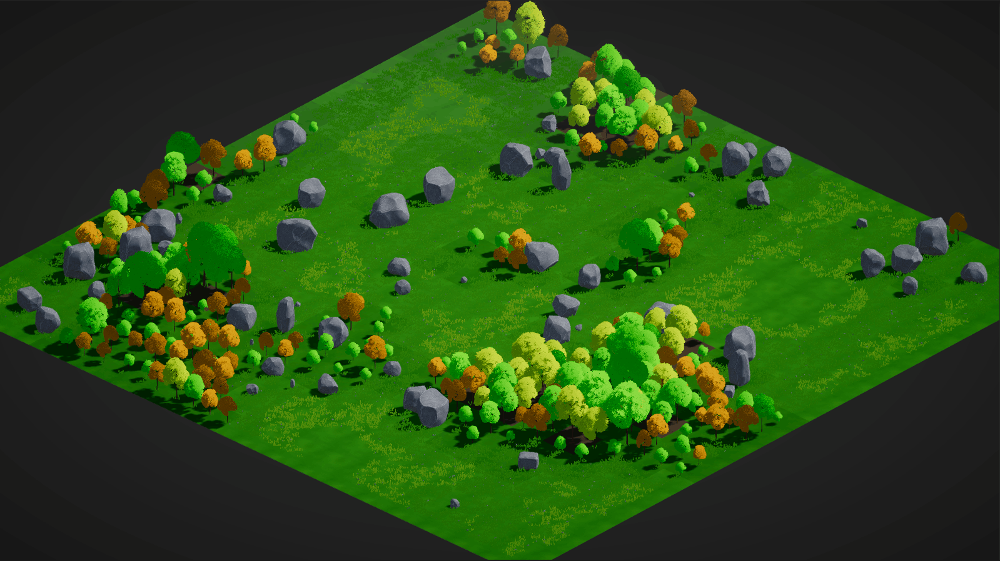
Features
Click a button to create large-scale environments without hand-placing every detail.
Uses Ghibli-style shaded environment assets to give generated scenes a soft, stylized look.
Easily change assets and terrain properties by dragging them into the editor and setting values.
System Breakdown
Procedural terrain generation automatically creates virtual landscapes through algorithms instead of handcrafting every detail. This saves time and resources while giving players unique, unpredictable landscapes that encourage discovery and exploration.
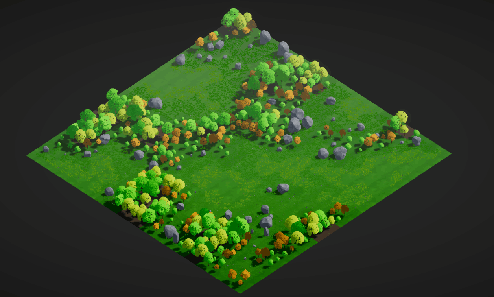
Perlin noise generates coherent, flowing structures, making it useful for terrain, clouds, organic textures, and other natural patterns. It adds visually pleasing randomness while avoiding abrupt changes.
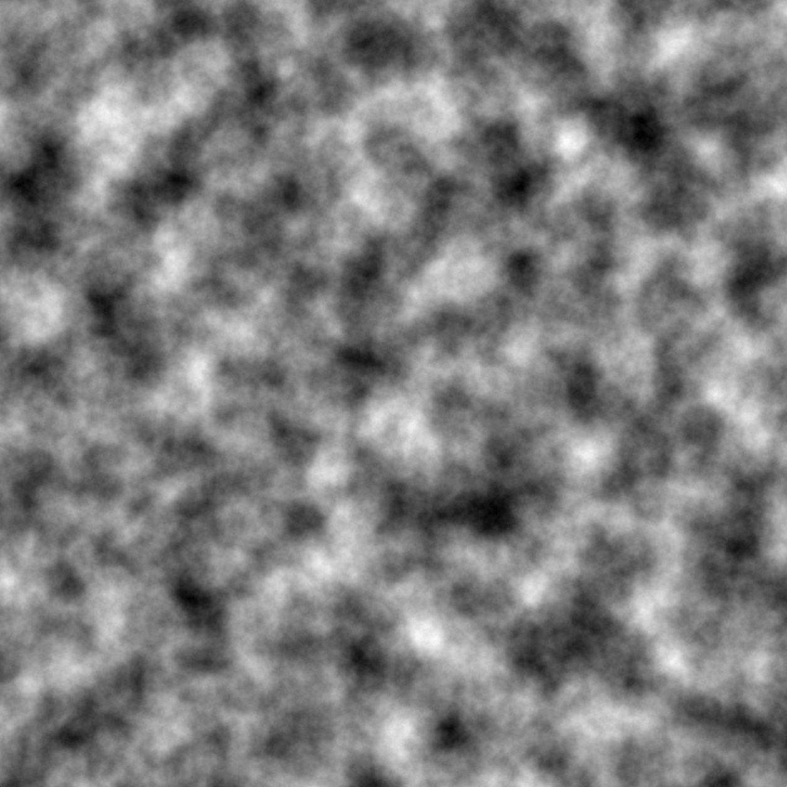
The generator offers customization for changing assets and terrain properties directly in the editor, allowing scenes to be adjusted for different requirements and scales.
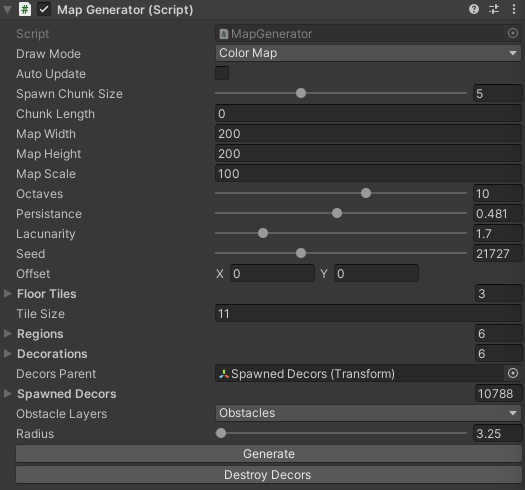
The Result
The result is a procedurally generated environment using layers of Perlin noise that can be customized to create scenes of different scales within minutes.
Generated Worlds
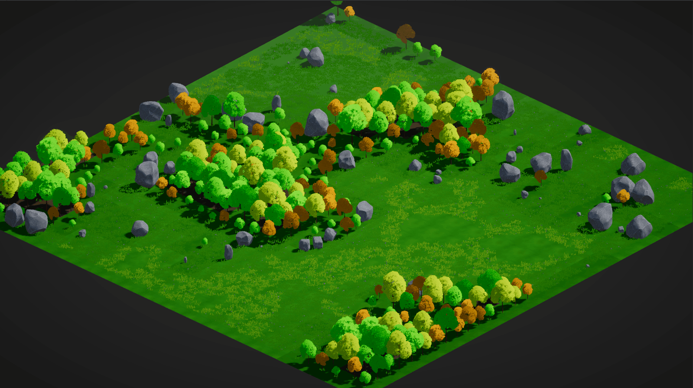
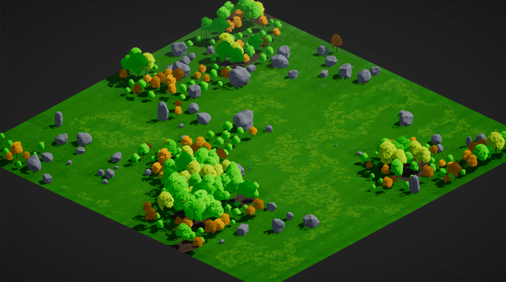
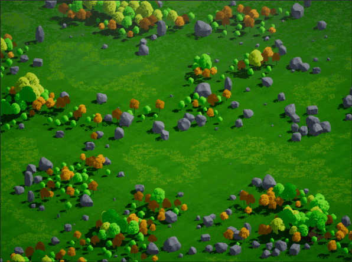
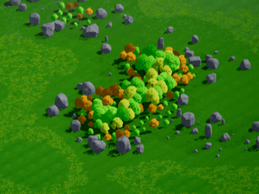
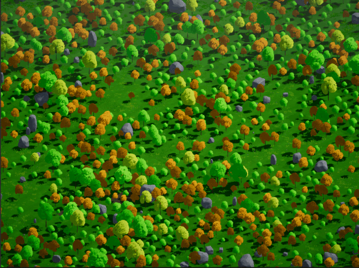
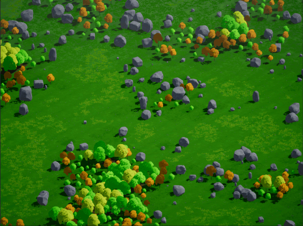
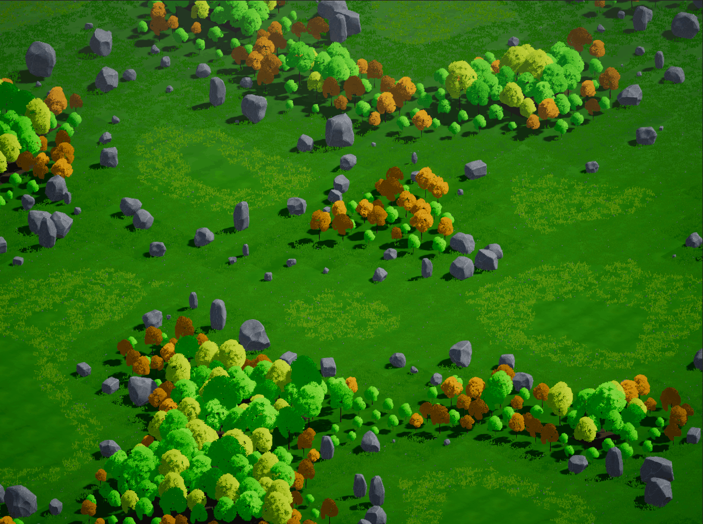